LL Buchanan Lake
Floating Islands
Betty's Island - 5, a floating island....
The ongoing story of a floating island.
Back on Betty's Island page 4, we left the island in the summer of 2008, planted with new grass and trees, after the difficulty of 2007.
The report on this page starts at the top with the December 2010 report, and goes down, back to 2009.
2010, December....
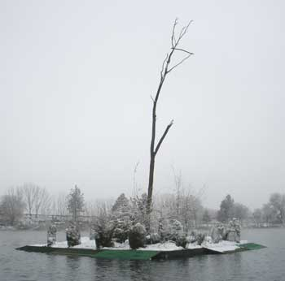
The 2010 winter project was to replace the narrow two foot wide, steep sloped shores of the island, with wider four foot wide, gradual sloped shores, to make the island look more like an island, instead of a raft. This involved unbolting and rebolting a lot of bolts next to the water, and screwing a lot of green outdoor carpet onto plywood, and gluing caps on PVC pipe for floats, each function preferring warm weather. Well, the island guy showed up in late November, just in time for a rather cold snowstorm. Half the project was completed, with significant amusement.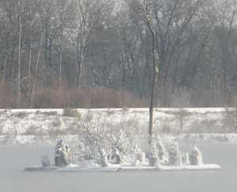
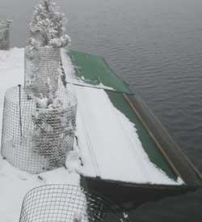
The new wider shores. Each side of the island got one new board, and two of the old boards screwed together to save money on the cost of the materials, and avoid that part of the tedious unbolting and rebolting to the hinges.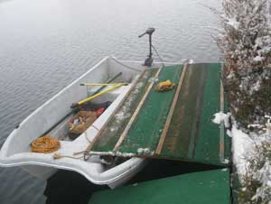
Yes, doing all this from that wobbly little boat offered a good portion of the amusement.
Well, three sides of the island got new shores. The other side, and Pebbles Island, will wait until summer.
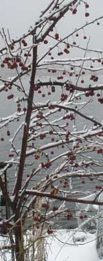
The flowering crabapple crop was good. Not sure what it was good for, but it looked cool.Betty kept working on the computer, now with the light on top of the computer, more visible from the entire lake shore.
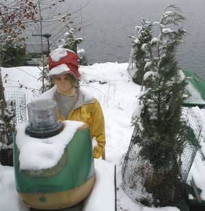
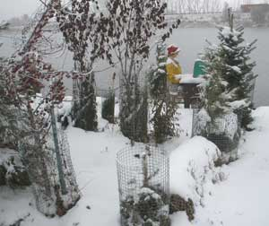
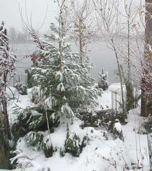
And in the photo to the left, is the little giant sequoia in the photo above, now over 6 feet tall. If forests grew on top of lakes with Canadian geese, there would be a glut of lumber in the world. One of the scrub spindly native slippery elm trees is over 12 feet tall.
2010, Summer..... Ah, the camera guy should have paid more attention to that weird flashing icon in the camera screen while he was taking pictures.
The trees and green native wildlife habitat vegetation (weeds) grew well. Every tree survived and thrived. The annual spiffy up the island adventure entailed pulling weeds, trimming the excessive slippery elm shoots, and giving the evergreen trees larger protective fencing so they don't look like they are growing inside a small can. Now they have a larger can shape. Major growth in the trees this year, most noticeable in the few native slippery elm that were allowed to grow, until the better, slower growing trees get bigger. The grass and weeds under the wire hoop fencing are robust and green. One can sit in a chair under the shade of the trees, which is what the tree guy did, with a glass of fine wine.
A pair of cormorants regularly sit on the top of the snag. Not quite as impressive as an eagle or osprey, but cormorants are large, and give the snag a grand bird perch image. The osprey prefer the lower tree perches around the lake edge, where they catch more carp.
2009, Spring..... All but six trees survived and did well. Betty's Island got spiffied up a bit more this time. New trees replaced the six non-survivors. Better wire fencing was added to protect the grass and trees from goose nibbling and beaver gnawing. Betty's got a new shirt and hat. Well, her old faded shirt and hat were spray painted. She got a solar cell desk light.
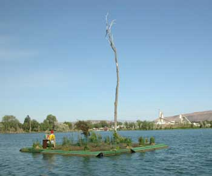
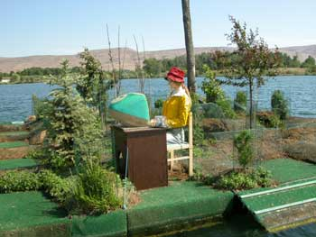
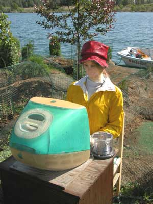
If you drive by on the freeway, and see the light, Betty is working late. Wave.
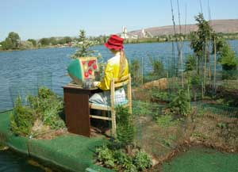
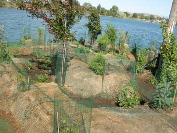
The grass sod got a little too thirsty to grow, but by another year it should get green from the local wildlife habitat cover (weeds), and in a few years, be shaded out by evergreen trees. New hooped sections of fencing were added to give some of the grass more growing room, an improvement over the areas that were covered with flat wire mesh to keep the geese from pulling the grass roots out, and allow geese and people to conveniently walk around on the island.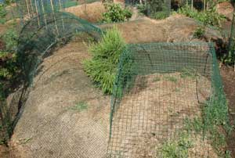
That is one of the two little giant sequoias planted last year.
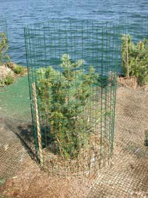
Fencing around the conifer trees prevents goose nibbling.
Fencing around the deciduous trees prevents beaver gnawing.
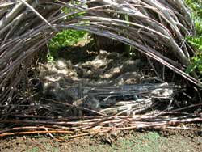
Goose down in the goose nest.
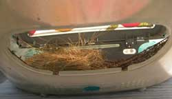
The dicky bird nest inside the computer. Bird brain powered computer. May be an improvement over what some computer geeks do to computer programs.
Betty's Island-1
Betty's Island-2
Betty's Island-3
Betty's Island-4
Betty's Island-6
Barney's Island
Pebbles Island
Aerial Photos
Neighbors
History
Swans
Birds
Trees
Trees-2
Trees-3
Lake
Links